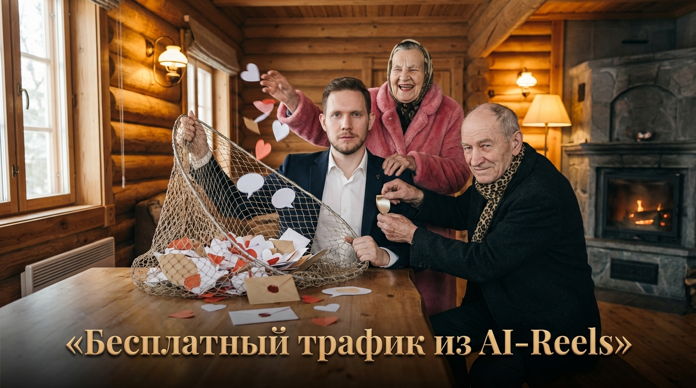

ROUTE 01 / OWN PROJECT
СВОЙ
ПРОЕКТ.
Бизнес, услуга, Telegram-канал, продукт, приложение, обучение, магазин. Охват становится внешним источником трафика.
AI-видео создают внимание. Дальше это внимание должно работать: на твой проект, продукт, канал, услугу или партнёрский оффер.
Я не учу «делать красивые ролики». Мы строим систему, где контент получает внимание и ведёт человека дальше по понятной логике.
Бизнес, услуга, Telegram-канал, продукт, приложение, обучение, магазин. Охват становится внешним источником трафика.
Если своего продукта нет, внимание можно направлять на подходящие аудитории партнёрские программы и монетизировать через конверсии.
Определяем аудиторию, цель и действие после просмотра.
Создаём AI-контент быстро и тестируем разные механики, а не ставим всё на один ролик.
Смотрим удержание, пересылки, переходы, клики и конечные действия.
Усиливаем то, что приводит нужную аудиторию и даёт результат дальше по воронке.

просмотров на AI-контенте и 50 000+ подписчиков. Для меня это не витрина цифр, а база тестов: хуки, герои, серийность, удержание, переходы.
Конкретные кейсы и примеры под твою задачу показываю лично в ЛС.
Попросить кейсы ↗Сначала смотрим твою ситуацию: что уже есть, какая аудитория нужна и куда логично вести трафик.
Свой проект или партнёрская модель. Контент подбирается под конечное действие, а не ради охвата как самоцели.
Практика строится вокруг реальных публикаций, а не вокруг просмотра теории.
Практическое обучение
Индивидуально разбираем задачу, строим контент-систему и маршрут трафика. Без обещаний «миллионов за неделю» и без искусственного дефицита.